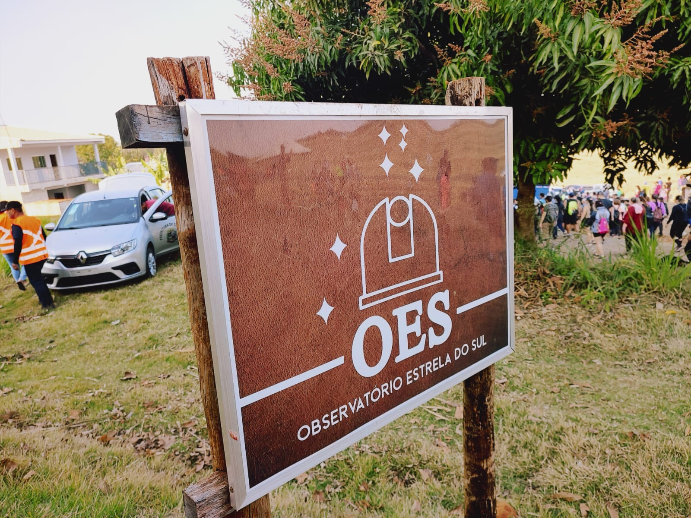
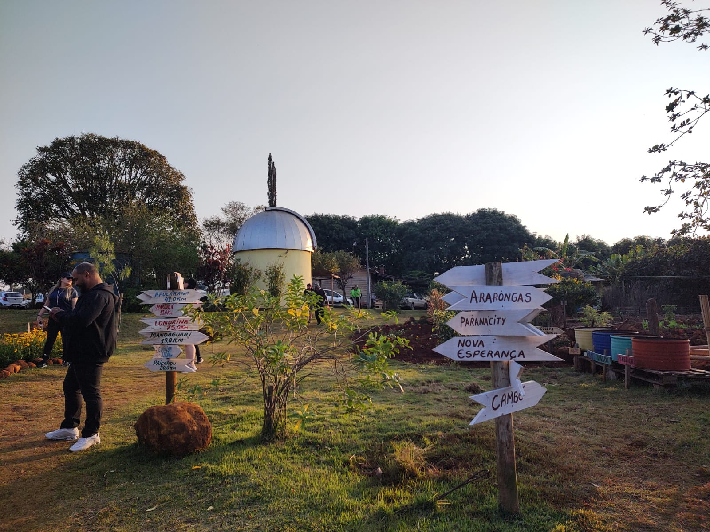
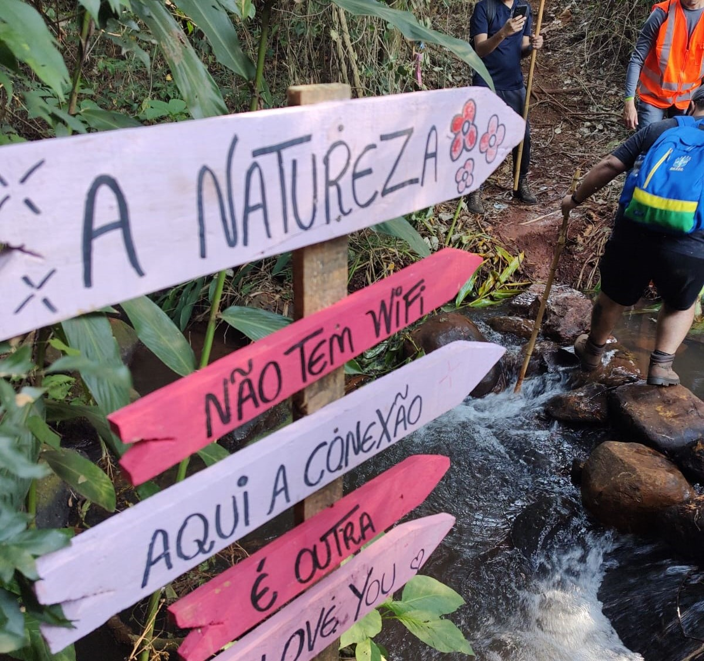
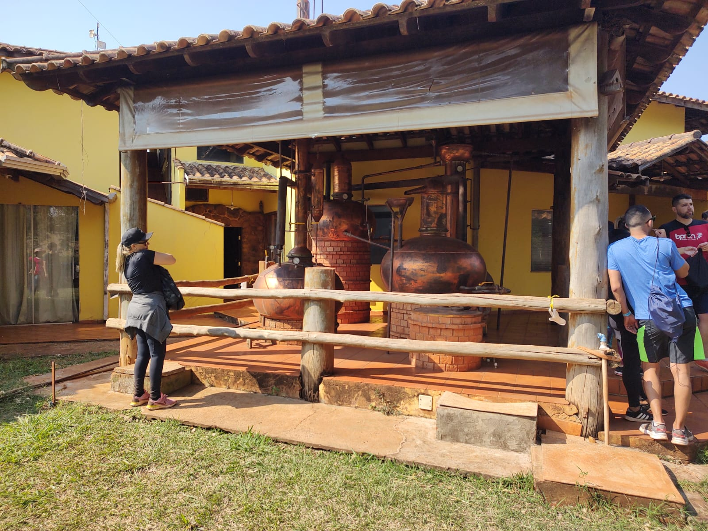

Entre trilhas e campos: passo a passo desvendando o rural
1ª Caminhada na Natureza - Sarandi (PR)
No último domingo do mês de julho (28), a prefeitura de Sarandi(PR) organizou um evento que atraiu diversas pessoas do meio urbano para uma jornada verde de 12km pela zona rural do município, com direito à trilhas, cachoeira, lazer e curiosidades sobre a vida no campo. Claramente, nossa equipe não podia deixar em branco!
A 1ª Caminhada na Natureza - Circuito Rio Ribeirão Itapuá, contando com mais de 1.000 participantes e com a organização da equipe de Desenvolvimento Econômico, junto aos agricultores da região, teve seu ponto de partida e conclusão no Observatório Astronômico Estrela do Sul - local que merece destaque em nossa narrativa.
Com uma história de realização incrível por trás da propriedade, hoje o observatório conta com agendamento de visitas e um sistema de camping que conquista muitas pessoas. Carlos Domingues, que se diz cativado pela astronomia desde os 12 anos de idade, construiu o observatório por conta própria aos poucos. Um grande exemplo de que todo tipo de sonhos podem se realizar na quietude do campo.
Partindo desse ponto, a caminhada seguiu por propriedades e trilhas, passando por riachos e algumas faixas de mata e propiciando a todos um apreciado contato com a natureza.
Durando o percurso, atravessamos a Fazenda Santa Juliana, onde se localiza uma atividade econômica um tanto quanto peculiar. Além de represas para criação de tilápia, a propriedade conta com uma destilaria de cachaça. O cômodo de armazenamento estava aberto ao público e até mesmo exemplares da produção foram vendidos.
Após 12km passo a passo, de volta ao observatório, a equipe Agro Atual se dirigiu à pequena feira de produtos artesanais, onde encontramos objetos decorativos, trabalhos artísticos manuais de muitas variedades, mel, doces, condimentos e até experimentamos um saboroso caldo de cana com limão.
Enquanto conversávamos com os produtores, uma empreendedora, sr. Lúcia, aceitou responder algumas perguntas. Descobrimos que sua pequena fábrica, assim como sua moradia, situam-se em Ourizona. Com seus produtos artesanais, como geleias e condimentos, ela atende seis mercados regionais da rede Condor, além de comercializar sua mercadoria, também, em Curitiba.
Por fim, aproveitamos o momento e perguntamos sua opinião sobre um tema que muito abordamos no Rural Atual: "Qual a relação entre o campo, a cidade e as oportunidades de vida?". sr. Lúcia usou a si mesma como exemplo, deixando a mensagem de que o campo produz tudo, e sem ele nada acontece, porém, se nós mesmos não aproveitarmos, tudo se perde. Então, as oportunidades entram neste ponto, onde o cuidado, o trabalho e a cidade nos permitem transformar e apreciar os frutos e possibilidades que o campo nos proporciona.
Converse conosco!
Tem alguma sujestão de conteúdo ou gostaria de compartilher ideias?
Você pode se interessar